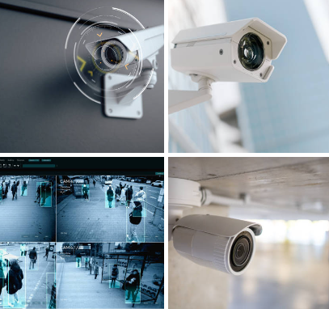

Soporte técnico
Diagnóstico, mantenimiento, configuración y asistencia técnica para equipos y entornos de trabajo.
Resuelve tu problemaORIDEV PERÚ SOLUCIONES TECNOLÓGICAS
Integramos tecnología, desarrollo de software, infraestructura y ciberseguridad para responder a las necesidades de empresas y organizaciones.


NOSOTROS
En ORIDEV PERÚ brindamos soluciones tecnológicas orientadas a empresas, profesionales y organizaciones. Integramos equipamiento, soporte, desarrollo digital, infraestructura y seguridad para acompañar distintos retos operativos.
Partimos de cada requerimiento para proponer alternativas funcionales y adaptadas al alcance de cada proyecto.
Conoce cómo podemos ayudarteSERVICIOS
Un portafolio tecnológico que se adapta a las necesidades de tu operación.
Diagnóstico, mantenimiento, configuración y asistencia técnica para equipos y entornos de trabajo.
Resuelve tu problemaEquipos, periféricos y soluciones tecnológicas seleccionadas según los requerimientos del cliente.
Encuentra la tecnología idealComputadoras, laptops, impresoras y proyectores para empresas, proyectos, capacitaciones y necesidades temporales.
Equipa tu proyecto hoyAplicaciones y sistemas personalizados para optimizar procesos, administrar información y mejorar la productividad.
Hagamos realidad tu ideaDiseño, implementación, configuración y optimización de redes e infraestructura tecnológica empresarial.
Potencia tu conectividadSistemas de videovigilancia para instalaciones, empresas y transporte, de acuerdo con los requerimientos del proyecto.
Cotiza tu sistema de seguridadMedidas preventivas y soluciones orientadas a fortalecer la protección de sistemas, redes e información.
Protege tu empresa digitalServicios en la nube, conectividad y comunicaciones para apoyar la continuidad de las operaciones.
Lleva tu empresa más lejosDESARROLLO DIGITAL
Creamos herramientas digitales alineadas con la forma en que trabaja tu organización.
Sistemas internos, automatización de tareas y herramientas de gestión.
Webs corporativas, portales y plataformas adaptadas a tus objetivos.
Paneles administrativos y funcionalidades diseñadas para cada proyecto.
ÁREAS DE SOLUCIÓN
Integramos capacidades tecnológicas para responder a diferentes escenarios empresariales.
Equipos y soporte para el día a día.
Software y plataformas para tu organización.
Redes, conectividad y servicios integrados.
Prevención y seguridad digital.
NUESTRO ENFOQUE
Un proceso claro para definir el alcance y acompañar cada requerimiento.
Comprendemos la necesidad, el contexto y los objetivos.
Definimos el alcance y la alternativa tecnológica adecuada.
Desarrollamos o configuramos la solución acordada.
Coordinamos el soporte según el servicio contratado.
CONTACTO
Cuéntanos qué necesita tu organización. Podemos conversar sobre equipos, soporte, desarrollo digital, infraestructura o seguridad tecnológica.
Contactar a ORIDEV